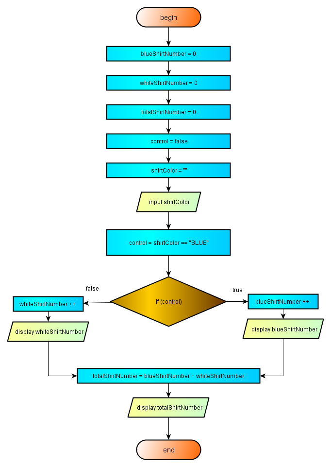
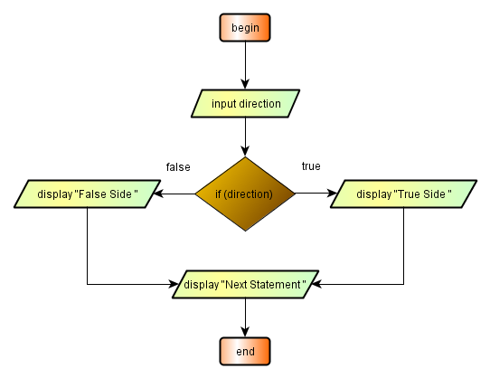

2.7.2 - If-ee statement
When there is two alternating program branches conveyed by two testing for truth in a single if statement, we use else part of if statement. The application of the else part is similar to the application of if statement. With only one ststement to execute per branch, theoretically there is no need to open a definition block:
if(condition) statement; else statement.
An else part is always related to the preceding if in the same block and which is not coupled with another else.
If there is more than one statement per branch, a definition block should be organized:
if(condition) { statement; ... statement; } else { statement; ... statement; }
It is advisable to open a definition block even with only one statement for executing per branch:
if(condition) { statement; } else { statement; }
The situation of conditional statement with double choice, is complety different from the conditional statement with a single choice. With one choice,
- Only one condition is tested.
- If control is affirmative, only the indicated statements are executed.
When both of the choices is tested with an if-else couple,
- Only one condition is tested.
- If control is affirmative, only indicated statements are executed.
- If control is negative, only another indicated statements are executed.
When both of the cases is tested, only one alternative statement/statement block indicated by the choice is executed. Let us explain with an example:

2.7.2 - Image -1 - Decision with alternating paths
In this example, either the whiteShirtNumber or blueShirtNumber is augmented by one but not both. When the execution of choices is over, the program flow passes to the next statement following the decision statement. The program list is given below:
package preliminary; public class SingleDecision { public static void main(String[] args){ int totalShirtNumber = 0; int blueShirtNumber = 0; int whiteShirtNumber = 0; boolean control = true; String shirtColor = ""; shirtColor = "White"; control = shirtColor == "BLUE"; if(control) { blueShirtNumber ++; System.out.println("Actual Blue Shirts Number = " + blueShirtNumber); } // end if else { whiteShirtNumber ++; System.out.println("Actual White Shirts Number = " + whiteShirtNumber); } // end if totalShirtNumber = blueShirtNumber + whiteShirtNumber; System.out.println("Actual Total Shirts Number = " + totalShirtNumber); } // end main } //end class SingleDecision
The result of this program :
Actual White Shirts Number = 1 Actual Total Shirts Number = 1
Looking to the flowchart of this program given in 2.7.2 - image-1, the keypoint is the box input shirtColor. In the program listing this corresponds to the assignment,
shirtColor="white";
Coming to the decision statement, any value other than "BLUE" renders the value of the variable control as false. This is the case in our program and the program flow control passes to the false side of the decision box and all the statements found here are executed. After the executiğon of the statements in the choice block, the program control passes to the statement next to the decision statement. During the program flow, the value of the boolean expression of the decision statement control the program barnching and either the statements indicated by the true part of the decision statement or the statements indicated by the false part of the decision statement are executed. This may be understood by expecting the program results of the above program.
Another illustrative program flowsheet is given below:

2.7.2 - image - 2 - Decision with alternating paths
The program listing covering the flowchart above is given below:
package preliminary; public class AlternativeBranches { public static void main(String[] args){ boolean direction = false; if(direction) { System.out.println("True Side !"); } // end if else { System.out.println("False Side !"); } // end else System.out.println("Next Statement !"); } // end main } //end class AlternativeBranches
The result of this program :
False Side ! Next Statement !
As we can see clearly from the examples, only one of the alternative paths is executed and the other altenative is ignored.
It is not dificult to follow program branching in the decision steps. The important point lies in the boolean expression governing the program branching. This expression should be carefully designed and fully tested for obtaining desired results in the program branching.